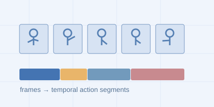

Temporal action segmentation · 3DV 2020
Fine-grained video action segmentation
Developed depthwise separable temporal convolutional networks to model action sequences in untrimmed video with improved computational efficiency.

Research overview
Developed depthwise separable temporal convolutional networks to model action sequences in untrimmed video with improved computational efficiency.
Objectives
- Identify fine-grained actions across the timeline of an untrimmed video.
- Model temporal structure while improving computational efficiency.
Methodology
Use depthwise separable temporal convolutions to learn action sequences over time and assign action labels throughout a video.
Key contributions
- Developed a temporal convolutional approach for fine-grained action segmentation.
- Focused on computationally efficient modeling of video action sequences.
Results
The work resulted in a peer-reviewed publication at 3DV 2020. The existing project summary reports improved computational efficiency; quantitative segmentation scores and efficiency measurements are available in the linked paper.
Related publications
3DV · 2020
Depthwise Separable Temporal Convolutional Network for Action Segmentation ↗
B. Hampiholi, C. Jarvers, W. Mader, H. Neumann
View all publications and BibTeX →